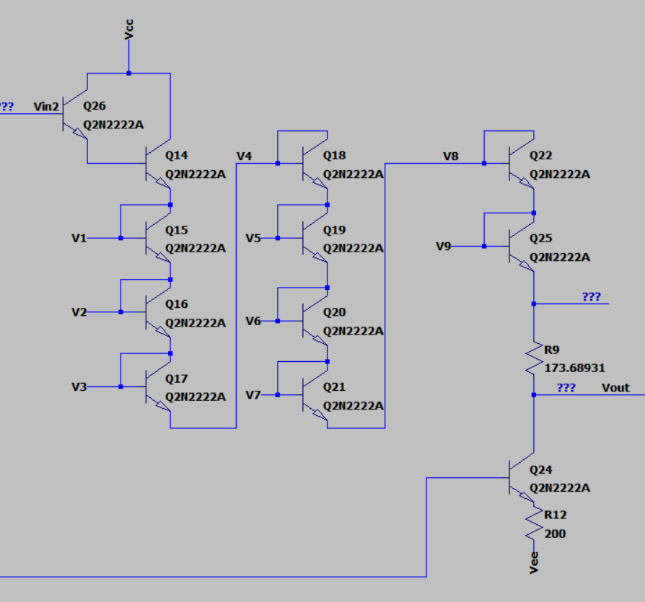

PROJECT OVERVIEW
Designing a discrete operational amplifier
This project involved the design, simulation, and validation of a general-purpose operational amplifier built entirely from commercially available bipolar junction transistors.
The design was developed as a multi-stage amplifier to study the behavior of different transistor amplifier configurations and their combined effect on gain, frequency response, and output drive capability.
The target open-loop gain was approximately 2500 V/V. The completed design consisted of three primary amplifier stages: a differential input stage, a buffer stage driving a common- emitter amplifier, and a Class AB output stage.
OP-AMP ARCHITECTURE
Three-stage discrete amplifier
The operational amplifier was divided into three functional stages, with each stage serving a specific role in the overall signal chain.
01 — Differential Amplifier
The input stage converts the differential input voltage into a corresponding transistor current difference, providing the foundation for the amplifier's voltage gain.
02 — Buffer & Common-Emitter Stage
A buffer stage using diode-connected transistors drives the common-emitter amplifier, providing additional voltage gain while interfacing between the input and output sections.
03 — Class AB Output Stage
The Class AB output stage provides the final output drive capability while reducing crossover distortion compared with a simple Class B configuration.
STAGE 01
Differential amplifier
The first stage of the operational amplifier is a BJT differential amplifier. This stage responds to the difference between the two input signals and establishes the input behavior of the overall amplifier.
The differential stage was analyzed and simulated to determine its operating point and contribution to the overall voltage gain.
STAGE 02
Buffer and common-emitter amplifier
The second stage combines a buffer formed using diode-connected transistors with a common-emitter amplifier. The buffer provides an interface between the preceding differential stage and the high-gain common-emitter stage.
The common-emitter amplifier provides a significant portion of the voltage gain required to reach the overall open-loop gain target.

STAGE 03
Class AB output stage
The final stage uses a Class AB output configuration to provide the required output drive capability. The stage was designed to operate with reduced crossover distortion while maintaining the ability to source and sink output current.
The output stage was analyzed both independently and as part of the complete amplifier to evaluate its effect on the final signal response.
SIMULATION
LTSpice analysis
LTSpice was used throughout the design process to evaluate the individual amplifier stages and the complete operational amplifier before hardware implementation.
Simulation was used to analyze voltage gain, operating points, frequency response, and the interaction between the different amplifier stages.


HARDWARE VALIDATION
From simulation to physical prototype
After simulation, the amplifier was assembled using commercially available BJT transistors and discrete components. The physical prototype was tested to compare the measured behavior with the simulated design.
A multimeter, oscilloscope, and signal generator were used to verify circuit operation, measure signal behavior, and evaluate the amplifier response.
The hardware testing process provided practical insight into transistor operating points, amplifier-stage interactions, feedback behavior, and differences between simulated and physical circuit performance.

FUTURE IMPROVEMENTS
Future improvements
Future iterations could further optimize the amplifier for gain-bandwidth performance, stability, output drive capability, and reduced distortion.
Additional analysis of compensation and closed-loop behavior could also be used to characterize the operational amplifier under a wider range of practical operating conditions.
KEY TECHNOLOGIES